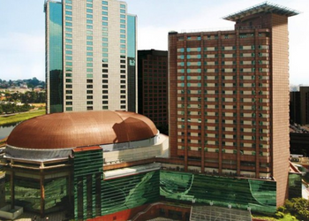

Sheraton São Paulo WTC Hotel

- Av. das Nações Unidas, 12559 - Brooklin Novo, São Paulo - SP
- A partir de R$ 403,00
- 4.7 estrelas
- 12,9 km da Av. Paulista
- sheraton.com.br
Localizado dentro do World Trade Center, Sheraton São Paulo alia a arquitetura moderna à decoração de luxo. O hotel dispõe de piscina, academia e business center de última geração com salas de reuniões. Os quartos deste hotel da rede Sheraton possuem ar-condicionado, Wi-Fi gratuito, TV a cabo, frigobar e banheiro privativo. O serviço de quarto está disponível 24 horas. O Sheraton São Paulo WTC Hotel conta com heliporto 24 horas para seu maior conforto.
- Tom Brasil
- Bienal de São Paulo
- Teatro Alfa
- Catedral da Sé
- Allianz Parque